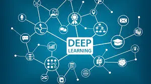

Artificial Intelligence (AI) is a branch of computer science focused on creating systems capable of performing tasks that typically require human intelligence. These tasks include learning, reasoning, problem-solving, perception, and language understanding. Here are some key points about AI:
Deep Learning (DL) is a subset of machine learning that uses neural networks with many layers to analyze and interpret complex data. Here are some key points about DL:
1. Neural Networks: Deep learning models are based on artificial neural networks, which are inspired by the structure and function of the human brain. These networks consist of layers of interconnected nodes (neurons) that process data.
2. Training: Deep learning models require large amounts of data and significant computational power to train. They learn by adjusting the weights of connections between neurons to minimize the error in their predictions.
3. Applications:
- Image Recognition: DL models can identify and classify objects within images, making them useful for applications like facial recognition, medical imaging, and autonomous vehicles.
- Speech Recognition: They can convert spoken language into text, enabling voice-activated assistants and transcription services.